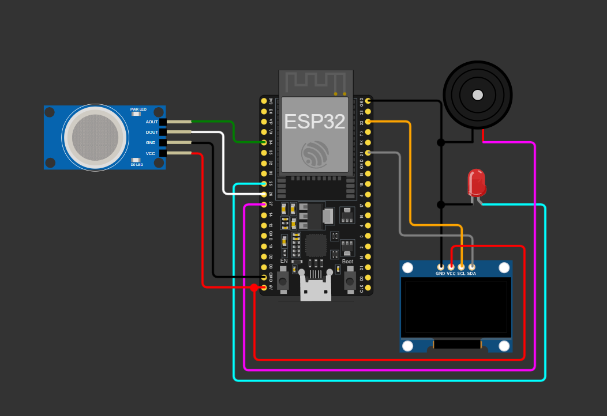
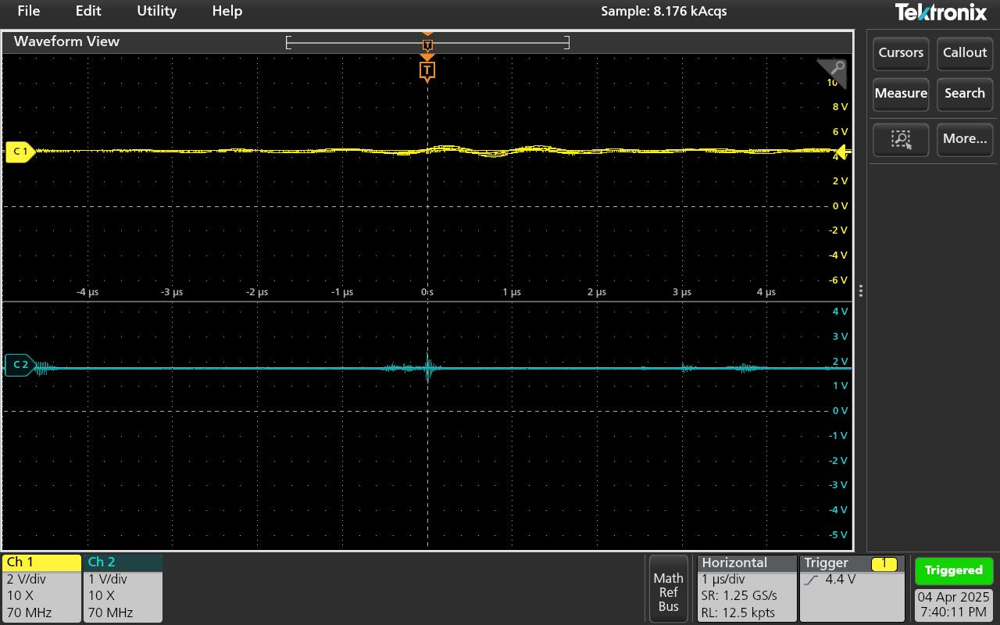
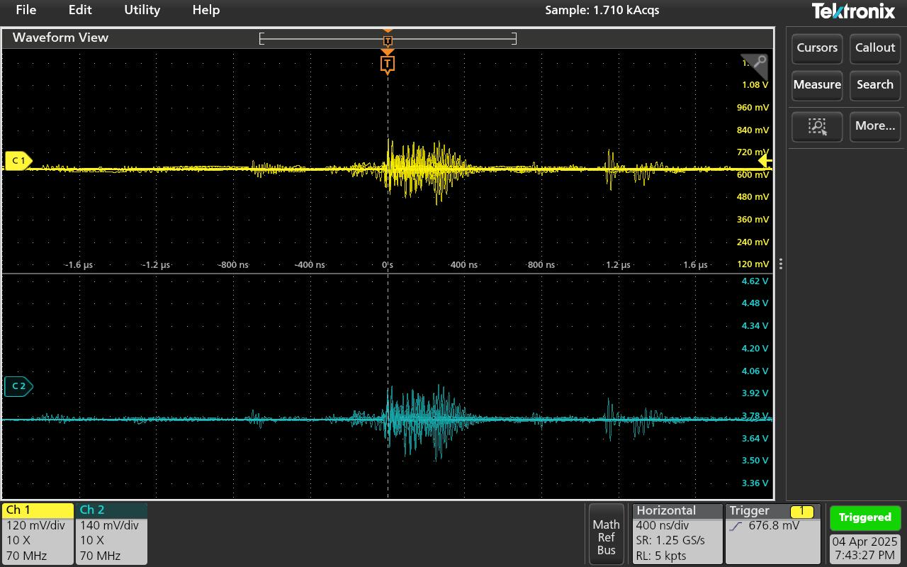
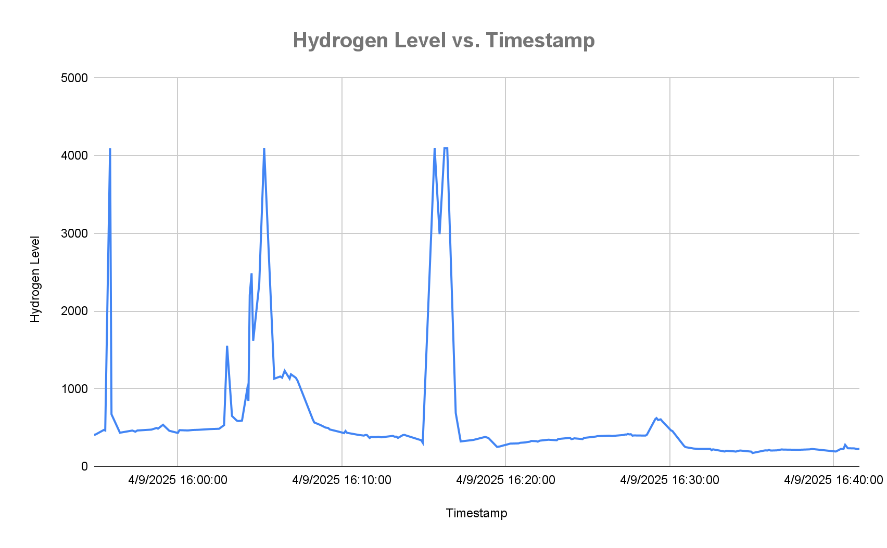

Understanding Sensors: MQ-8 Hydrogen Sensor – Live Alert, Monitoring and Tracking
Introduction
The MQ-8 hydrogen sensor is a widely used gas sensor designed to detect hydrogen (H₂) concentrations in the air. It is part of the MQ series of sensors, commonly used for air quality monitoring and gas detection. The MQ-8 sensor uses a semiconductor sensing material that changes its resistance in response to the presence of hydrogen gas.
Specifications
| MQ-8 Hydrogen Sensor Specifications | |
|---|---|
| Model | MQ-8 |
| Sensor Type | Semiconductor |
| Encapsulation | Bakelite, Metal cap |
| Target Gas | Hydrogen |
| Detection Range | 100–1000 ppm (H2 gas) |
| Standard Circuit Conditions | |
| Loop Voltage (Vc) | ≤24V DC |
| Heater Voltage (VH) | 5.0V ±0.1V AC or DC |
| Load Resistance (RL) | Adjustable |
| Sensor Characteristics | |
| Heater Resistance (RH) | 30Ω ±3Ω (room temperature) |
| Heater Consumption (PH) | ≤950 mW |
| Sensitivity (S) | Rs(in air)/Rs(in 1000 ppm H2) ≥ 5 |
| Output Voltage (Vs) | 2.5V–4.0V (in 1000 ppm H2) |
| Concentration Slope (α) | ≤0.6 (R1000ppm / R400ppm H2) |
| Standard Test Conditions | |
| Temperature | 20℃ ±2℃ |
| Humidity | 55% ±5% RH |
| Test Circuit | Vc: 5.0V ±0.1V; VH: 5.0V ±0.1V |
| Preheat Time | Over 48 hours |
| Oxygen Content | |
| Value | 21% (not less than 18%) |
| Effect | O2 concentration affects initial value, sensitivity and repeatability |
| Life Span | |
| Life Span | 10 years |
Application
- Used in gas leakage detecting equipment in homes and industry
- Suitable for detecting Hydrogen (H₂), avoiding noise from alcohol, cooking fumes, LPG, CO
Principle
- Heating Element: A heater inside the sensor warms up the semiconductor material.
- Gas Interaction: When hydrogen gas is present, it interacts with the surface of the semiconductor, causing changes in its resistance.
- Signal Processing: The sensor measures these changes and converts them into a voltage or current output. The signal strength correlates with hydrogen concentration.
Output
The MQ-8 typically provides an analog output signal, which can be processed by a microcontroller (such as Arduino or ESP32) to give a precise reading of hydrogen concentration.
Aim
To use the MQ-8 Hydrogen Sensor to live monitor the presence of hydrogen gas and plot a graph by tracking hydrogen levels in a Google Sheet.
Materials
- MQ-8 Hydrogen Sensor (1)
- OLED Display 0.96in (1)
- Buzzer (1)
- LED (1)
- Resistor 220Ω (1)
- ESP32-S3-WROOM-1 IDF (1)
Procedure
- Assemble the circuit as per the schematic (not shown). 
- Compile and upload the code to the ESP-IDF module.
- Connect to WiFi and set up Google Apps Script for data logging.
Sample ESP32 Code Structure
#include <WiFi.h>
#include <HTTPClient.h>
#include <Wire.h>
#include <Adafruit_GFX.h>
#include <Adafruit_SSD1306.h>
#define WIFI_SSID "your_wifi_ssid"
#define WIFI_PASSWORD "your_wifi_password"
#define GOOGLE_SCRIPT_URL "your_web_app_url"
#define SCREEN_WIDTH 128
#define SCREEN_HEIGHT 64
#define OLED_SDA 6
#define OLED_SCL 7
#define OLED_RESET -1
#define AOUT_PIN 34
#define DOUT_PIN 26
#define LED_PIN 25
#define BUZZER_PIN 27
// Table: Pin Assignments
// | Pin Name | ESP32 GPIO | Function |
// |------------|------------|-------------------------|
// | AOUT_PIN | 34 | MQ-8 Analog Output |
// | DOUT_PIN | 26 | MQ-8 Digital Output |
// | LED_PIN | 25 | LED Alert |
// | BUZZER_PIN | 27 | Buzzer Alert |
// | OLED_SDA | 6 | OLED I2C Data |
// | OLED_SCL | 7 | OLED I2C Clock |
// ...setup() and loop() as described above...
Output
The system displays real-time hydrogen levels on the OLED and triggers a buzzer and LED alert if dangerous levels are detected. Data is logged to Google Sheets for tracking and analysis.
 | Timestamp | Hydrogen Level | Hydrogen Detected |
|---|---|---|
| 4/9/2025 15:54:54 | 410 | NO |
| 4/9/2025 15:54:58 | 411 | NO |
| 4/9/2025 15:55:30 | 471 | NO |
| 4/9/2025 15:55:34 | 464 | NO |
| 4/9/2025 15:55:52 | 4095 | YES |
| 4/9/2025 15:55:57 | 672 | NO |
Graphical representation can be created in Google Sheets using the logged data.
Results
- The system detected hydrogen gas using the MQ-8 sensor and ESP32.
- Readings were displayed in real-time on a 0.96" OLED screen.
- LED and buzzer provided alerts when gas was detected.
- Data was logged to Google Sheets via WiFi and Apps Script.
Conclusion
- Real-time monitoring and display were achieved.
- Alert mechanisms provided timely warnings.
- Remote data logging enabled efficient record-keeping and analysis.
- The system is suitable for basic hydrogen gas monitoring and can be extended for IoT safety systems.
References
RFID: IoT Based Access Control System using RFID with Local and Cloud Logging
Expected Schematic:
Made Schematic:
Here, RFID module is connected to a microcontroller, and the accept/reject is followed by one/three tone(s) of the buzzer and LED.
CODE: (tried)
Controller code:
// Libraries
#include <WiFi.h>
#include <HTTPClient.h>
#include <MFRC522.h>
#include <SPI.h>
#include <LiquidCrystal_I2C.h>
#include <RTClib.h>
// WiFI Setup
const char* ssid = "YourWiFiSSID";
const char* password = "YourWiFiPassword";
// APIs
const char* localServer = "http://<YOUR_PC_IP>:5000/scan";
const char* googleSheetsURL = "https://script.google.com/macros/s/.../exec";
// Hardware setup
#define SS_PIN 5 // RC522 Chip Select
#define RST_PIN 4
#define LED_PIN 2
MFRC522 rfid(SS_PIN, RST_PIN); // RFID reader object
LiquidCrystal_I2C lcd(0x27, 16, 2); // 16x2 LCD with I2C address 0x27
RTC_DS3231 rtc; // Real-time clock
// Setup - serial line, hardwares, wifi.
void setup(){
Serial.begin(115200);
SPI.begin();
rfid.PCD_Init();
lcd.begin();
lcd.backlight();
pinMode(LED_PIN, OUTPUT);
WiFi.begin(ssid, password);
while (WiFi.status() != WL_CONNECTED){
delay(500);
Serial.print(".");
}
Serial.println("\nConnected to WiFi");
if (!rtc.begin()) {
lcd.print("RTC not found!");
while (1);
}
}
// Check for new RFID card
if (!rfid.PICC_IsNewCardPresent() || !rfid.PICC_ReadCardSerial()) return;
// Read UID bytes and build a hex string
String uid = "";
for (byte i = 0; i < rfid.uid.size; i++) {
uid += String(rfid.uid.uidByte[i], HEX);
}
uid.toUpperCase();
Serial.println("Scanned UID: " + uid);
// Send UID to local Flask server via HTTP POST
HTTPClient http;
http.begin(localServer);
http.addHeader("Content-Type", "application/json");
String postData = "{\"uid\":\"" + uid + "\"}";
int code = http.POST(postData);
String payload = http.getString();
http.end();
// Process the output from the server and display it.
String name = "unknown";
String status = "denied";
String timestamp = "";
if (code == 200 && payload.indexOf("granted") != -1) {
int nameIndex = payload.indexOf("name") + 7;
int nameEnd = payload.indexOf("", nameIndex);
name = payload.substring(nameIndex, nameEnd);
int timeIndex = payload.indexOf("timestamp") + 12;
int timeEnd = payload.indexOf("", timeIndex);
timestamp = payload.substring(timeIndex, timeEnd);
status = "granted";
}
// Output
// Display
lcd.clear();
lcd.setCursor(0, 0);
lcd.print(name);
lcd.setCursor(0, 1);
lcd.print(status == "granted" ? timestamp : "ACCESS DENIED");
// Blink LED
int blinks = (status == "granted") ? 1 : 3;
for (int i = 0; i < blinks; i++) {
digitalWrite(LED_PIN, HIGH);
delay(200);
digitalWrite(LED_PIN, LOW);
delay(200);
}
// Log to google sheet
http.begin(googleSheetsURL);
http.addHeader("Content-Type", "application/json");
postData = "{\"uid\":\"" + uid + "\",\"name\":\"" + name +
"\",\"status\":\"" + status + "\",\"timestamp\":\"" + timestamp
+ "\"}";
http.POST(postData);
http.end();
// Wait and stop current RFID Communication
delay(1000);
rfid.PICC_HaltA();
Server Code:
# Imports and app setup
from flask import Flask, request, jsonify
from flask_cors import CORS
import sqlite3
from datetime import datetime
app = Flask(__name__)
CORS(app)
# Database setup function
DB_PATH = 'users.db'
def init_db():
with sqlite3.connect(DB_PATH) as conn:
c = conn.cursor()
# Create 'users' table if it doesn't exist, storing UID and name
c.execute('''
CREATE TABLE IF NOT EXISTS users (
uid TEXT PRIMARY KEY,
name TEXT NOT NULL
)
''')
# Create 'logs' table to store each scan event with details
c.execute('''
CREATE TABLE IF NOT EXISTS logs (
id INTEGER PRIMARY KEY AUTOINCREMENT,
uid TEXT NOT NULL,
name TEXT,
status TEXT NOT NULL,
timestamp TEXT NOT NULL
)
''')
conn.commit()
# Handle POST requests from ESP32
@app.route('/scan', methods=['POST'])
def scan():
data = request.get_json()
uid = data.get('uid', '').upper()
timestamp = datetime.now().strftime('%Y-%m-%d %H:%M:%S')
# Check user existence and log attempt
with sqlite3.connect(DB_PATH) as conn:
c = conn.cursor()
c.execute('SELECT name FROM users WHERE uid = ?', (uid,))
row = c.fetchone()
if row:
name = row[0]
status = 'granted'
else:
name = 'unknown'
status = 'denied'
# Log every attempt
c.execute('INSERT INTO logs (uid, name, status, timestamp) VALUES (?, ?, ?, ?)',
(uid, name, status, timestamp))
conn.commit()
# Output form server → Response to ESP32
return jsonify({
'name': name,
'status': status,
'timestamp': timestamp
})
# Run the server
if __name__ == '__main__':
init_db()
print("Starting Flask server on http://0.0.0.0:5000")
app.run(host='0.0.0.0', port=5000)
AppScript:
// Function start and error handling
function doPost(e) {
try {
// Parse JSON data from the request
var data = JSON.parse(e.postData.contents);
// Extract data with defaults
var uid = data.uid || "unknown";
var name = data.name || "unknown";
var status = data.status || "unknown";
var timestamp = data.timestamp || new Date().toISOString();
// Get the Google Sheet and append a row
var sheet = SpreadsheetApp.getActiveSpreadsheet().getSheetByName("Logs");
sheet.appendRow([timestamp, uid, name, status]);
// Return success JSON response
return ContentService.createTextOutput(JSON.stringify({result: "success"}))
.setMimeType(ContentService.MimeType.JSON);
// Catch errors and return error JSON
} catch (error) {
return ContentService.createTextOutput(JSON.stringify({result: "error", message: error.message}))
.setMimeType(ContentService.MimeType.JSON);
}
}